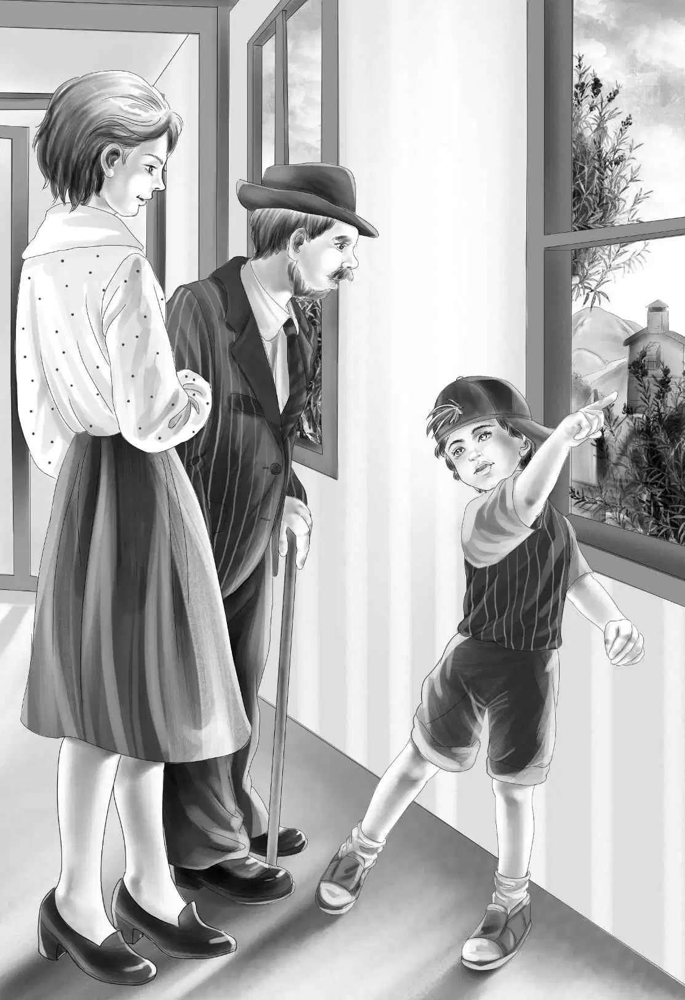

Mike’s Mother’s Place
从上车开始，一路上班尼的小嘴就没闲着，迈克也说个不停。
“慢慢来，小伙子们！”卡特先生叹了口气，“一个一个地说！不然我一个字都听不清。”
“那我先来！”迈克说。
“好吧，这回让你先讲！”班尼同意了，“毕竟要说的是关于你妈妈的事情。”
“谢天谢地，班尼，你这次总算靠谱了！”迈克说，“卡特先生，我妈妈确实是个很勤奋的洗衣工，可问题是——她并不爱这行。”
“是吗，迈克？”卡特先生问道，“那你想让我怎么帮她呢？”
“我们为她想好了一份合适的工作，”迈克说，“她那么喜欢做馅饼，为什么不能做馅饼生意呢？她送人的馅饼都有一百万张了。”
“得了吧，迈克，”班尼说，“你再开口提‘一百万’，卡特先生就不会相信你了。”
“行，那就说几十张馅饼好了！”迈克说。
“真有你的，迈克！”卡特先生笑道，“我相信你的话，我自己就吃过不少馅饼呢！”
“听到没？”迈克得意起来，“每个人都喜欢我妈妈做的馅饼，大家一定会愿意去买。”
不过卡特先生又说：“你们光跟我说这个计划有什么用呢？我们得去问问你妈妈，最后的决定权在她那儿。”
看到大家一起出现在蓝房子里，伍德太太惊讶不已。
亨利请求道：“伍德太太，您能跟我们一起去铀矿大楼的办公室吗？就耽误您几分钟时间。”
“没问题，”伍德太太说，“我马上就动身，正好顺路带一张樱桃馅饼给夜班守卫，我认识他。”
“您又做馅饼了？”维莉问道。
“做了四张呐！”伍德太太说，“我准备送给火灾里救过我的好人们。还有一张要给你们简姑婆送去，班尼。我的这位好邻居给了我起酥油和馅料，我只能帮她洗衣服作为回报了。”
迈克朝班尼眨了眨眼睛：“或许还有别的回报方式呢！”
孩子们一路欢声笑语，他们迫不及待地想让迈克的妈妈看到那间空房子，怀着这样的期盼，大家终于到了目的地。
“看，这间屋子空着太可惜了！”班尼叫道，“要是有个好点的烤炉……”
伍德太太一把搂住班尼。“你是个多热心的孩子啊，班尼！”她低声喊道，“我明白你们为我费心安排的一切了。”
“这么说，您喜欢这个主意喽？以做馅饼为生！”杰西问，“您不会感到厌烦吧？”
“老天，怎么会厌烦？我是一辈子都不会厌倦做馅饼的！”伍德太太兴奋地大声说，“我喜欢和面、擀面，喜欢往饼里加樱桃馅儿、苹果馅儿、桃子馅儿或者蓝莓馅儿……而我最喜欢的，是看到大家开心地吃着我做的馅饼！”
突然，身后传来一个声音：“比起看别人吃，我更喜欢自己吃！”大家一起扭头看去。
“是夜班守卫！”迈克叫了起来，“麦卡锡先生，您好！”
“你好啊，迈克！”对方回应道。
“噢，麦卡锡先生，”伍德太太说，“这是专门为你做的樱桃馅饼，希望你喜欢！”说着她把馅饼递给了他。
“这世上还会有人不喜欢你做的馅饼吗？”麦卡锡先生看了看孩子们，“刚听说你要卖馅饼了，是怎么回事儿？”
迈克高兴地绕着屋子蹦跶了一圈。“看啊！”他喊道，“就在这间屋子里，妈妈可以把烤炉放在墙角，在这里烤馅饼，然后在大窗户那儿卖，我们都可以帮她。”
“不错，不错！”麦卡锡先生大声说，“这个好点子是谁想到的？”
“是我姐姐杰西第一个想到的，”班尼回答道，“我是第二个想到的，对吧，亨利？”
“没错，是你们两个的功劳！”亨利说，“我们还得买一个水槽和一台冰箱，麦卡锡先生。至于房子的使用权，咱们要得到经理加德纳先生的同意才行。”
“还得让爷爷同意我们买水槽和别的东西。”维莉说。
“万一你们的爷爷不让你们买怎么办？”麦卡锡先生说，“那毕竟不是一点小钱，并不是所有大人都支持孩子们做这样的事情的。”
“可我们的爷爷一定会！”班尼说，“再说了，我们当时在棚车里生活，没碰到爷爷的时候，还不是一样能应付一切。”
卡特先生对麦卡锡先生点了点头，“奥登先生非常信任这几个孩子，他对他们几乎是有求必应。”
守卫微笑地看着杰西，“真不明白你们这几个孩子还忙活些什么，整个矿不都是属于你们的吗？你们的爷爷不该让你们这么辛苦的。”
杰西摇了摇头，“爷爷从不这么认为。他已经够有钱了，可还是坚持工作，他说‘有事可做的人才是最快乐的’。我们都觉得他是对的，以前我们打工赚到四块钱的时候，是最幸福的！爷爷希望我们毕业后都能自食其力。”
“很少有爷爷像他这样，”麦卡锡先生摇了摇头，“奥登先生自己工作就很勤奋，我知道的。”
“麦卡锡先生，您觉得这个卖馅饼的主意怎么样？”杰西问道。
“我……我想，要买馅饼的人肯定很多，伍德太太一个人恐怕忙不过来呢！”
“您能为我们的馅饼做做宣传吗？”亨利说。
“还用得着我做宣传吗？大家一看到‘馅饼’的招牌就会立马飞奔过来了！”
“招牌？”班尼兴奋地叫道，“您是说招牌吗？那好办，我想到了一个好名儿，就叫‘迈克妈妈的小店’吧！”

“招牌由我来写吧！”维莉欢呼道。
“好极了！”杰西说，“馅饼店取这个名字再好不过啦！”
伍德太太一直在微笑，眼睛里却闪烁着泪光。“这下好了，”她说，“大家原本只认识迈克，马上也会认识他妈妈了。”
“等快开业的时候，我们给小店拍几张照片。”亨利建议道，“说不定他们可以帮我们登到报纸上。”
麦卡锡先生走到开阔的窗户边。“没错，”他说，“窗户这里很适合卖馅饼呐！”
迈克靠向麦卡锡先生，轻声问道：“我家失火的情景你看到了吗？”
“没有，”麦卡锡先生说，“没看到。”
“那是一场可怕的大火，”迈克说，“所有人都去看了，你怎么没去看呢？你对火灾不感兴趣吗？”
麦卡锡先生看了看迈克，“当然不是，孩子，其实我很想去，可我的职责是在这里值夜班啊！”
“太遗憾了，”迈克说，“当时的情景实在是惊人呢！”
“我知道，”麦卡锡先生说，“那天晚上我恰巧看到矿上有可疑的人，就留了下来，然而我巡视了一圈，却没发现一个人影。”
“迈克，你怎么还不过来！”班尼叫了起来，“你们在聊什么呢？”
迈克的举动让所有人都大吃一惊，他开始边跳边叫道：“蓝帽子，蓝帽子！”
“迈克，你到底怎么了？”亨利问道。
迈克高声回答：“我知道怎么找到那个戴蓝帽子的人啦！”
卡特先生惊讶地盯着这个小男孩：“你果真能找到？你应该加入联邦调查局才对！”